Yeawon Lee
jujubetree080@naver.com
PROFILE
안녕하세요. 저는 미디어 콘텐츠학과를 전공하며 영상 기획 및 제작 등의
실무 중심 과제를
수행해왔습니다. 팀 프로젝트에서는 일정 관리 및 역할 배분과 의견 총합을 담당하며,
구성원 간의 커뮤니케이션을 원활히 조율하는 역할을 맡았습니다. 이러한 경험을 바탕으로
주어진 업무를 체계적으로 정리하고, 정확하게 전달하는 강점을 가지고 있습니다.
수행해왔습니다. 팀 프로젝트에서는 일정 관리 및 역할 배분과 의견 총합을 담당하며,
구성원 간의 커뮤니케이션을 원활히 조율하는 역할을 맡았습니다. 이러한 경험을 바탕으로
주어진 업무를 체계적으로 정리하고, 정확하게 전달하는 강점을 가지고 있습니다.
Skill
Education
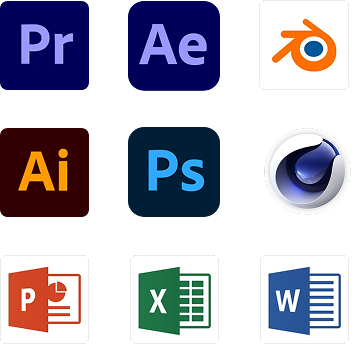
🎓경성대학교 재학 중
University Kyungsung, Republic of Korea
2023년 입학, 미디어콘텐츠학과 전공
Admission 2023, Majoring in Media Contents
💼 서창고등학교 졸업
Seo Chang High School, January 2023 Graduation,
Republic of Korea
University Kyungsung, Republic of Korea
2023년 입학, 미디어콘텐츠학과 전공
Admission 2023, Majoring in Media Contents
💼 서창고등학교 졸업
Seo Chang High School, January 2023 Graduation,
Republic of Korea
Typographic
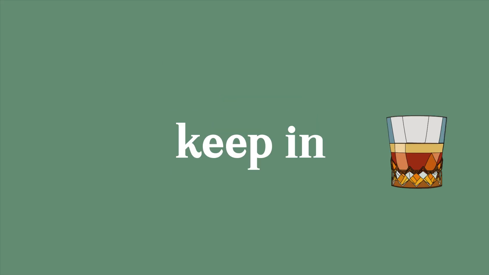
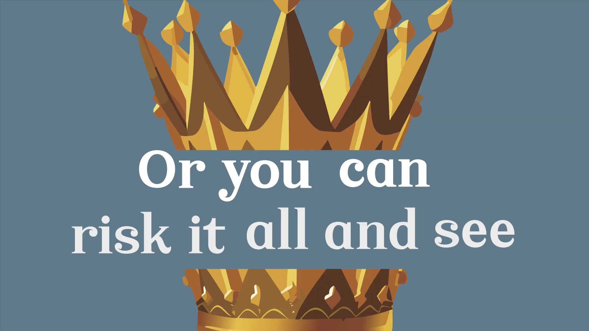
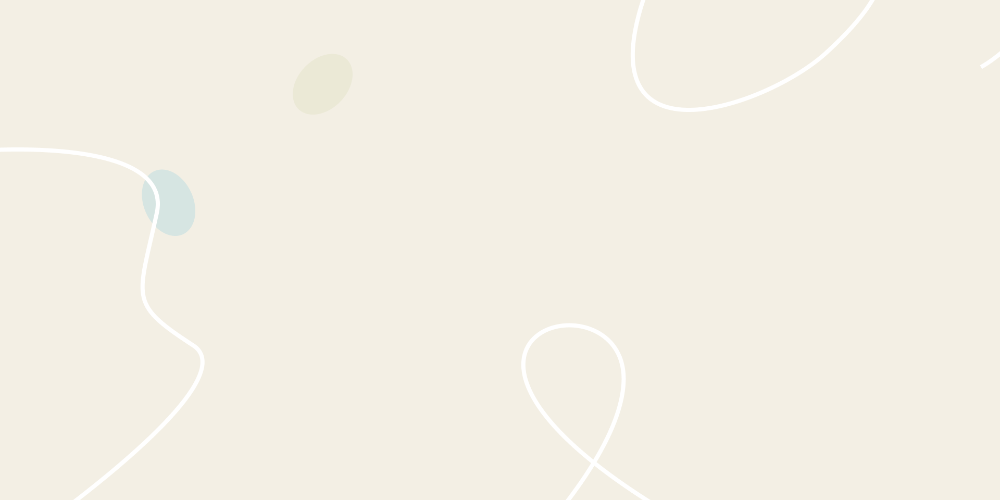
Illustration
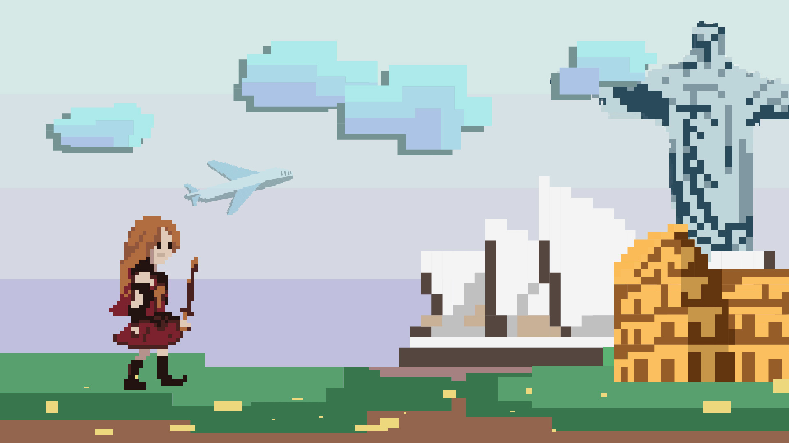
Traveling
게임 속 주인공이 세계를 누비는 발상에서 출발해, 현실의 여행을
게임적 상상력으로 확장시켰습니다. 캐릭터보다 여행 자체를
주인공으로 삼아 자유로운 탐험을 시각화하는 데 중점을 두었습니다.
게임적 상상력으로 확장시켰습니다. 캐릭터보다 여행 자체를
주인공으로 삼아 자유로운 탐험을 시각화하는 데 중점을 두었습니다.
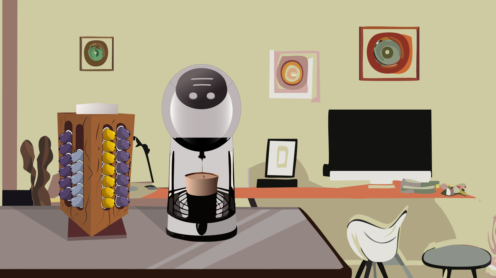
Coffee
캡슐커피머신을 통해, 일상 속에서도 언제든지 고품질 원두커피를
즐길 수 있음을 표현하고자 했습니다. 커피 경험이 특별한 공간에만
국한되지 않는다는 메시지를 담았습니다.
즐길 수 있음을 표현하고자 했습니다. 커피 경험이 특별한 공간에만
국한되지 않는다는 메시지를 담았습니다.
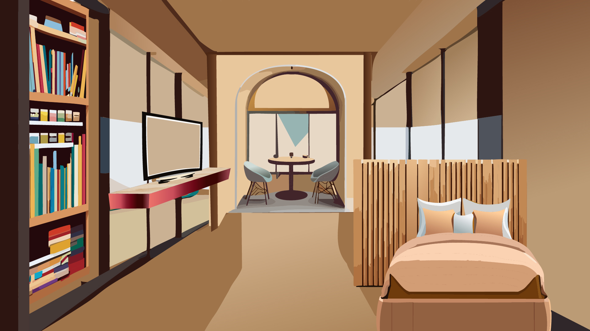
Public transport
물리적 이동에 많은 시간을 소비하는 사람들에게, 대중교통 안은
단순한 이동수단을 넘어 부족한 수면을 보충하거나 책을 읽는 등
여가시간을 누릴 수 있는 공간이 될 수 있음을 보여주고자 했습니다.
단순한 이동수단을 넘어 부족한 수면을 보충하거나 책을 읽는 등
여가시간을 누릴 수 있는 공간이 될 수 있음을 보여주고자 했습니다.
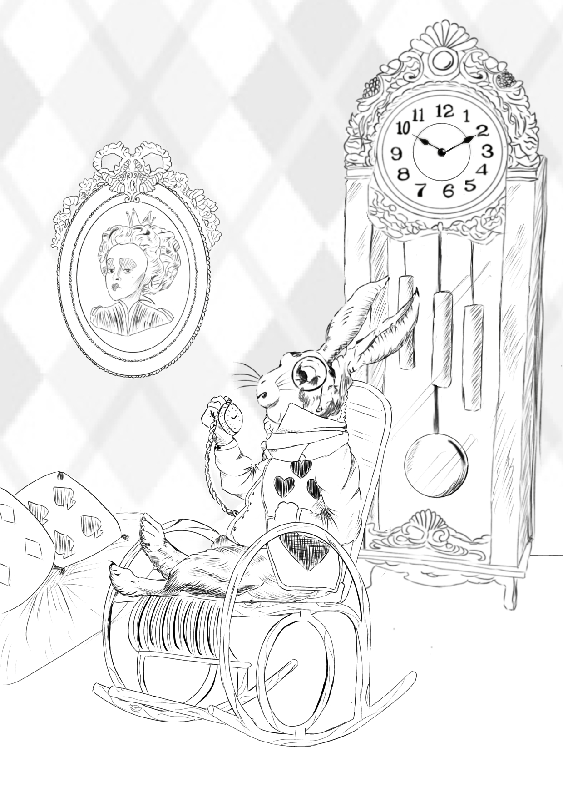
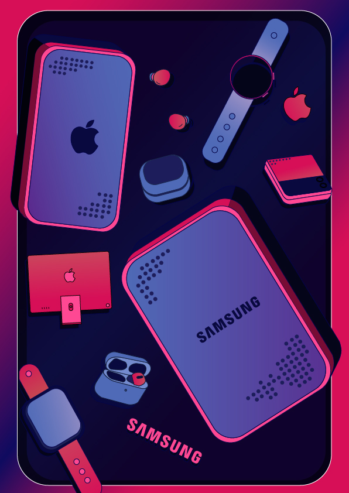
Clock
‘이상한 나라의 앨리스’ 속 시계토끼의 휴식을 주제로,
시간을 중시하는 캐릭터의 성격에 맞춰 괘종시계와
회중시계를 배치해 주제를 명확히 표현했습니다.
시간을 중시하는 캐릭터의 성격에 맞춰 괘종시계와
회중시계를 배치해 주제를 명확히 표현했습니다.
• 전체 작업은 옛날 동화책의 느낌을 살리기 위해 선화로만 그려,
색감을 배제하고 섬세한 선으로 디테일을 강조하였습니다.
• 고전적인 삽화 스타일을 사용하여, 동화책 속 세계관을 표현하고
시계토끼의 캐릭터와 환경을 동화적이고 따뜻한 분위기로 풀어내었습니다.
색감을 배제하고 섬세한 선으로 디테일을 강조하였습니다.
• 고전적인 삽화 스타일을 사용하여, 동화책 속 세계관을 표현하고
시계토끼의 캐릭터와 환경을 동화적이고 따뜻한 분위기로 풀어내었습니다.
Cinema4D
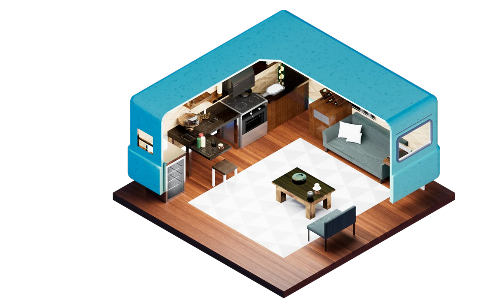
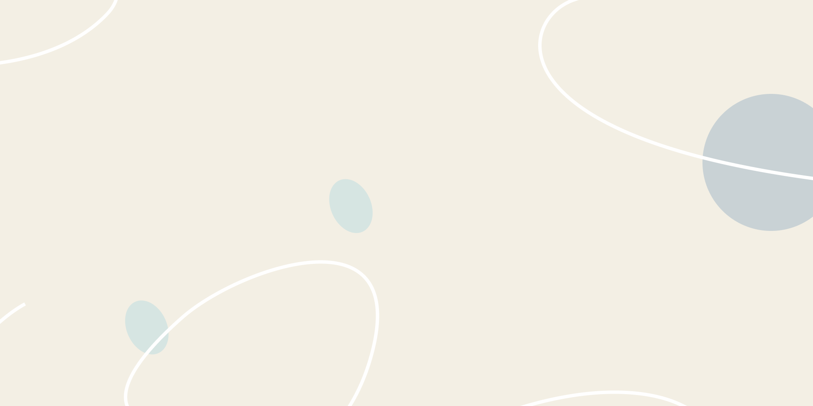
Campervan
Cinema 4D를 활용해 제작한 캠핑카 모델로,
디테일한 텍스처 표현에 중점을 두었습니다.
모델링부터 조명, 렌더링까지 전 과정을 직접 작업하였습니다.
디테일한 텍스처 표현에 중점을 두었습니다.
모델링부터 조명, 렌더링까지 전 과정을 직접 작업하였습니다.
Cyberpunk City
공중도시 프로젝트
미래 기술로 구현된 공중도시를 주제로 한 사이버 펑크 시티
프로젝트입니다.
애니메이션 ‘라퓨타’에서 영감을 받아 현실과는 다른, 층위에 존재하는
엘리트들의 공간을 상상하며, 공중에 떠 있는 하나의 도시를 설계했습니다.
도시는 총 5개의 건물로 구성되며, 이 중 4곳은 고위층의 여흥과 유흥을 위한
공간, 1곳은 숙박을 위한 메인 타워로 기획되었습니다.
애니메이션 ‘라퓨타’에서 영감을 받아 현실과는 다른, 층위에 존재하는
엘리트들의 공간을 상상하며, 공중에 떠 있는 하나의 도시를 설계했습니다.
도시는 총 5개의 건물로 구성되며, 이 중 4곳은 고위층의 여흥과 유흥을 위한
공간, 1곳은 숙박을 위한 메인 타워로 기획되었습니다.
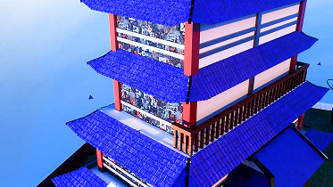
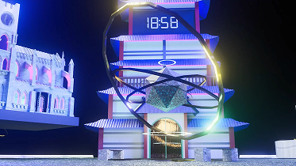

상류층만이 접근 가능한
미래형 공중도시를 콘셉트로,
뛰어난 기술력과 격차 사회의
단면을 함께 표현
미래형 공중도시를 콘셉트로,
뛰어난 기술력과 격차 사회의
단면을 함께 표현

주간에는 평화롭고 고요한
분위기, 야간에는 네온사인 등을
통해 타락과 사치가 공존하는
도시의 이면을 시각화
분위기, 야간에는 네온사인 등을
통해 타락과 사치가 공존하는
도시의 이면을 시각화

각 건물은 기능과 목적에
따라 디자인을 차별화해 내러티브
중심의 공간 구성을 구현
따라 디자인을 차별화해 내러티브
중심의 공간 구성을 구현

Podcasts
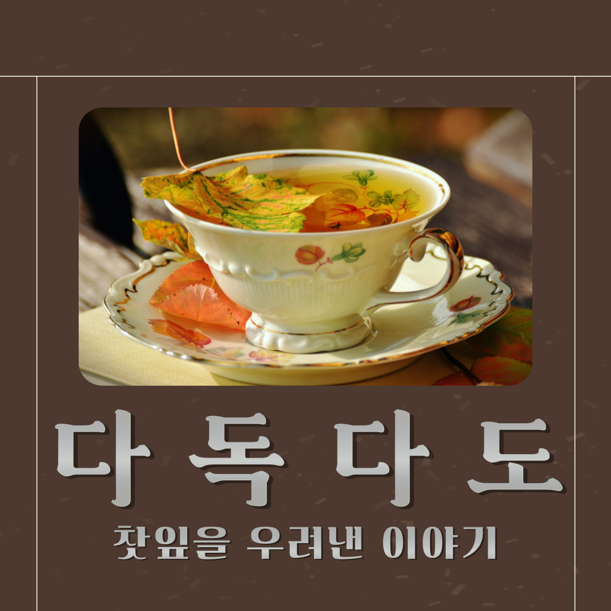다독다도
일반 대중에게 다소 생소할 수 있는 차(Tea) 문화를 보다
친숙하게 소개하고자 기획된 보이는 라디오 콘텐츠입니다.
청취자가 차에 대한 부담 없이 접근할 수 있도록, 차에 얽힌 설화, 전설,
속담 등 다양한 문화 요소를 중심으로 구성하였습니다. 단순한 정보 전달에
그치지 않고, 시청각 요소를 적극 활용하여 흥미 유발과 정보 전달이라는
두 가지 목적을 함께 충족하고자 하였습니다.
친숙하게 소개하고자 기획된 보이는 라디오 콘텐츠입니다.
청취자가 차에 대한 부담 없이 접근할 수 있도록, 차에 얽힌 설화, 전설,
속담 등 다양한 문화 요소를 중심으로 구성하였습니다. 단순한 정보 전달에
그치지 않고, 시청각 요소를 적극 활용하여 흥미 유발과 정보 전달이라는
두 가지 목적을 함께 충족하고자 하였습니다.
forward
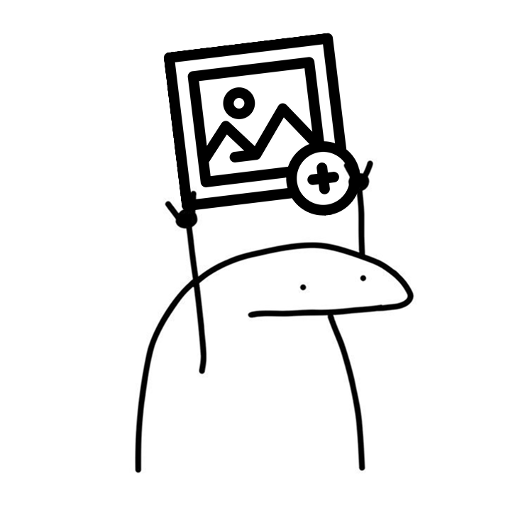
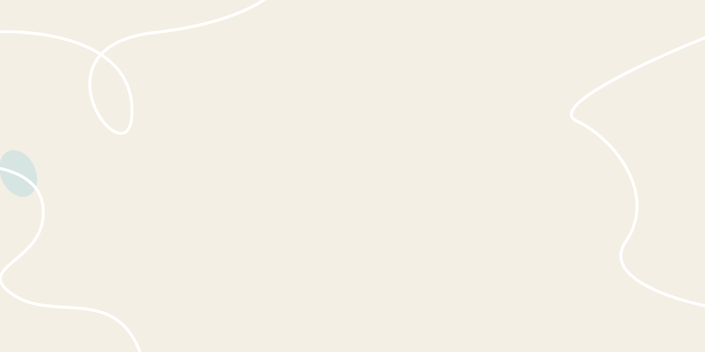
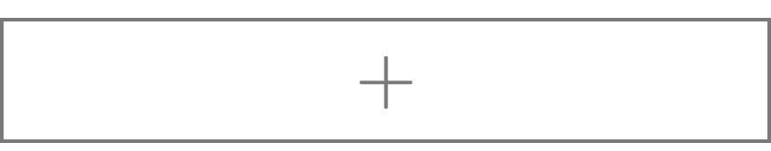
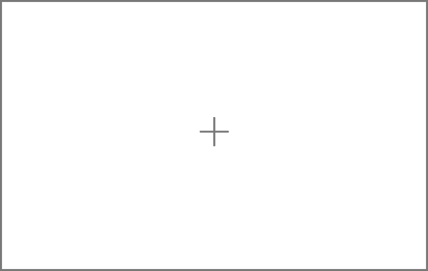